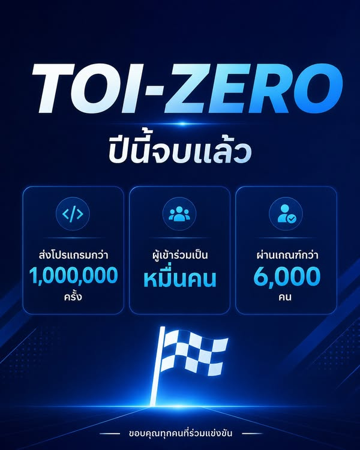

ชัยชนะก้าวแรกอยู่ที่ตัวคุณเอง
{kind=link}

ระบบ TOI-Zero ปิดรับการทำโจทย์แล้ว ตัวเลขที่เห็นก่อนปิดระบบมีการส่งโปรแกรมมากกว่าล้านครั้งจากนักเรียนเป็นหมื่นคน และคาดว่ามีนักเรียนมากกว่า 6,000 คนทำโจทย์ผ่านเกณฑ์
นี่ไม่ใช่แอคหลุม ยอดวิว หรือยอดไลก์ แต่เป็นเด็กที่เขียนโปรแกรม ส่งโค้ด เจอข้อผิดพลาด แก้ไข ส่งใหม่ และทำซ้ำจนสำเร็จ
การมีของฟรี ไม่ได้แปลว่าจะมีคนใช้
แม้จะมีระบบออนไลน์ ตัวตรวจโปรแกรม หลักสูตร โจทย์ และช่องทางเข้าถึง พร้อมลดภาระครูในการจัดค่ายลงมากแล้ว การกระจายโอกาสก็ยังไม่ทั่วถึง
การมีโอกาสไม่ได้หมายความว่าโอกาสนั้นจะถูกหยิบขึ้นมาโดยอัตโนมัติ แต่ข้อมูลทำให้เริ่มเห็นว่าพื้นที่ใดก้าวหน้า พื้นที่ใดมีศักยภาพ และพื้นที่ใดยังต้องการแรงสนับสนุนเพิ่ม
ของฟรีสร้างทักษะได้ แต่ความพยายามต้องมาจากผู้เรียน
ทักษะไม่เกิดจากการมีบัญชีหรือเปิดหน้าโจทย์ แต่เกิดจากความใฝ่รู้ ความอยากเรียน ความตั้งใจ และความมุ่งมั่นที่จะพาตนเองไปข้างหน้า
ระบบมีโจทย์หลายร้อยข้อ แต่เกณฑ์ผ่านกำหนดให้เลือกทำโจทย์ง่าย ปานกลาง และยากรวมกัน 40 ข้อ คนที่ผ่านจึงไม่ได้เพียงลองเล่น แต่ต้องมีวินัย วางแผน และพยายามต่อเนื่องพอสมควร
จาก TOI-Zero สู่เส้นทางที่สูงขึ้นทีละขั้น
ผู้เรียนบางคนจะเข้าสู่ค่าย 1 สาขาคอมพิวเตอร์ตามศูนย์โรงเรียน บางคนไปต่อค่าย 2 ตามศูนย์มหาวิทยาลัย จากนั้นอาจก้าวไปสู่การเป็นตัวแทนศูนย์ การแข่งขัน TOI และการคัดเลือกผู้แทนประเทศไทยเพียง 4 คนไปแข่งขัน IOI
ระยะทางจาก TOI-Zero ถึง IOI ยังอีกไกล แต่ทุกเส้นทางต้องเริ่มจากก้าวแรก โลกไม่ได้มีเพียงเรา ยังมีเยาวชนจากหลายประเทศที่ฝึกหนัก คิดลึก และก้าวไปได้ไกลเช่นกัน
คนเก่งและระบบสนับสนุนคือทรัพยากรสำคัญ
ในระดับสูง ผู้เรียนมีโอกาสฝึกกับวิทยากรของ สสวท. หลายคนเคยได้รับเหรียญจาก IOI และผ่านการแข่งขันระดับโลกมาแล้ว ความเชี่ยวชาญเช่นนี้เป็นทรัพยากรของประเทศที่สร้างยากและเงินเพียงอย่างเดียวซื้อไม่ได้
เบื้องหลังยังมีทีมมหาวิทยาลัยบูรพาที่ดูแลระบบและ server ต่อเนื่องห้าเดือน ตลอดจนครู ผู้ปกครอง ศูนย์ สอวน. และทุกคนที่ช่วยผลักดันเด็กให้เข้ามาอยู่ในเส้นทาง
การได้เข้ามาอยู่ในเกมสำคัญกว่าผลคัดเลือกครั้งเดียว
จะได้เข้าค่าย สอวน. หรือไม่ อาจไม่สำคัญเท่ากับวันนี้ได้เข้ามาอยู่ในเกมที่สอนตรงไปตรงมาว่า ถ้าอยากเก่งต้องลงมือทำ ถ้าอยากไปต่อต้องฝึก และถ้าอยากชนะต้องชนะตัวเองก่อน
ชัยชนะก้าวแรกอยู่ที่ตัวคุณเอง
บทความที่เกี่ยวข้อง ข้อมูล TOI-Zero กับการขยายศูนย์ สอวน. ใหม่ เมื่อข้อมูลการลงมือฝึกช่วยให้เราเห็นพื้นที่ที่มีศักยภาพ และพื้นที่ที่ยังต้องได้รับการสนับสนุน